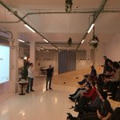
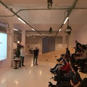

@ironhack
Ironhack is an international coding bootcamp that believes the best way to learn how to do something, is by actually doing it.
Madrid, Barcelona & Miami
Ironhack.com
675 fotos y vídeos


 


En respuesta a rufodelarosa
Ironhack @ironhack 3 h
Temblad @seedtag, que @rufodelarosa con uno de nuestros #bootcamp se haría CTO en un par de meses ;) #RufoIronhacker
Ironhack @ironhack 4 h
¡Regístrate ahora para obtener tu propia cronología personalizada!
Gonzalo Manrique
@gonzariquePedro Pozuelo
@pezueloJose Mengual
@mengujosFabio López
@felopePromocionado por la obra social la Caixa
#El príncipe final31,3 K Tweets
#MasterChef29,5 K Tweets
Depor40,9 K Tweets
Lucas Vázquez35,7 K Tweets
#Todobienhastaque54,1K Tweets
#NadaPeorQueEmpieza a ser tendencia
Sporting79K Tweets
#SELFIEFORSEB31,6K Tweets
Bartra29,5 K Tweets
#SiMePagaranEs tendencia hace 4 horas
© 2016 Twitter Sobre nosotros Ayuda Condiciones Privacidad Cookies Información sobre anuncios